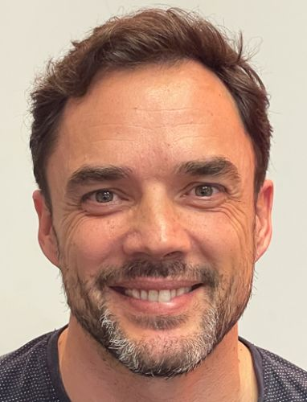

Víctor Otero Sánchez

Resumen
Hola, soy Víctor Otero Sánchez, un responsble de pruebas de software con 7 años de experiencia. Me apasiona la tecnología y disfruto
trabajando en equipo para asegurar la calidad del software. Me gusta el desarrollo de aplicaciones y mis intenciones son las de
adentrarme en este campo
Formación
- Ingeniería Técnica en Informática de Sistemas - Universidad de Granada (2010-2013)
- Grado en Ingeniería Informática - Universidad de Granada (2013-2015)
- Máster en Desarrollo de Aplicaciones para Dispositivos Móviles - Universidad de Granada (2015-2016)
Experiencia Laboral
- Responsable de Pruebas de Software - MasOrange (2018-presente)
- Responsable de provisión en operaciones - Orange (2005-2018)
- Desarrollador Junior en Lotus Domino - varias empresas (2000-2005)
- Asistente de usuarios en help desk - Coopers & Lybrand (1998-2000)
Habilidades
- Pruebas de Software
- Automatización de procesos con python
- Desarrollo de Aplicaciones Web
- Gestión de Proyectos
- Trabajo en equipo
Contacto
Correo electrónico: victor.oteros@masorange.es